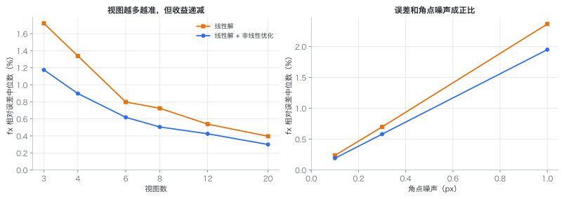
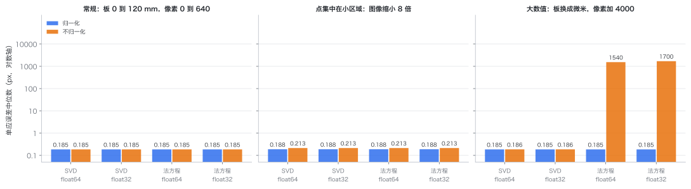
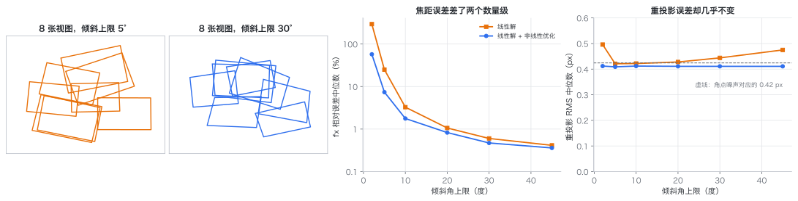
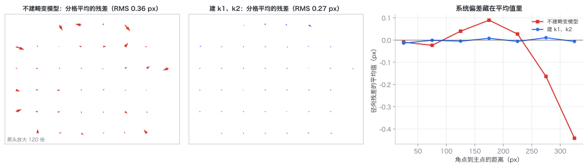
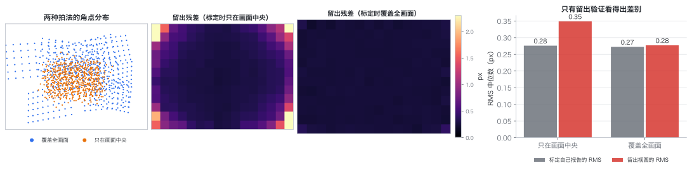

本章所有数字都来自合成相机上的实测，记录在 figures/实测数字.json，由 solutions 分支的 solutions/figures/ch17.py 生成。线性解用本章作业的参考实现，带非线性优化的对照用 OpenCV 的 calibrateCamera。换成真实相机，数值会变，结论的方向要自己再测一遍。
0. 本章怎么学
应用场景：把像素换算成物理尺寸（线宽、缺陷大小、套刻偏差），校正镜头畸变，建立相机和运动平台、相机和相机之间的坐标关系。凡是要回答“这个东西有多大、在哪里”的检测和量测，前面都有一步标定。
优先级：P0，岗位要求里单独列出。前置是第 4 章（齐次坐标、单应）和第 7 章（针孔模型）。后面第 21 章的渲染相机和第 24 章的坐标变换用同一套模型。
| 档位 | 累计用时 | 做什么 | 做到什么算完 |
|---|---|---|---|
| 速通 | 3 小时 | 读第 1、2 节和第 6 节，看懂图 3 到图 5，把第 7 节演示里列的四条都试一遍，答完 4 道小测 | 能讲清内参、外参、畸变各是什么，标定图应该怎么拍，为什么重投影误差小不代表标定准 |
| 标准 | 12 小时 | 读完全章并跟着推一遍第 3 节，跑 Notebook，完成作业并验收通过，填实验记录 | 验收全部 PASS，实验记录里有视图数、倾斜角和误差的关系 |
| 深挖 | 18 小时 | 再做第 10 节的破坏实验和第 11 节的扩展 | 用自己拍的棋盘图完成一次标定，并用留出的图报告误差 |
用时超过所选档位的 1.5 倍还没做完，就把卡点写进 学习进度.md，先往下一章走。第 3 节的推导是本章最花时间的部分，速通档可以只记结论。
1. 标定要求什么，不准会怎样
针孔模型（第 7 章）把三维点投影到像素：
- 内参 \(K\)：焦距（以像素为单位）、主点、倾斜（现代相机 \(\gamma \approx 0\)）。换镜头或调焦之后才会变。
- 外参 \(R\)、\(t\)：世界坐标系到相机坐标系的变换，每张标定图各有一组。
- 畸变：真实镜头不是理想针孔，需要额外参数（第 2 节）。
标定就是用已知几何的标定物（棋盘、圆点阵列），从图像里反推这些参数。
不准的代价可以直接量出来。本章的合成相机分辨率 640×480，带一点桶形畸变（\(k_1 = -0.1\)），它让画面右下角的点向内移动约 9.6 px。如果标定时不建畸变模型：
| 不建畸变模型 | 建 k1、k2 | |
|---|---|---|
| 重投影 RMS（px） | 0.34 | 0.27 |
| 焦距 fx 的相对误差 | 2.7% | 0.24% |
重投影误差只从 0.27 px 涨到 0.34 px，看上去差不多，焦距误差的中位数却到了 2.7%。在已知工作距离下，物体尺寸等于像素长度乘以距离再除以焦距，焦距错百分之几，量出来的尺寸就错百分之几。第 6 节会反复遇到这个现象：重投影误差小，不代表参数准。
2. 畸变模型
在归一化坐标 \((x, y) = (X_c / Z_c,\; Y_c / Z_c)\) 上，记 \(r^2 = x^2 + y^2\)：
然后 \(u = f_x\,x_d + c_x\)，\(v = f_y\,y_d + c_y\)。
- \(k_1 < 0\) 是桶形畸变（广角常见），\(k_1 > 0\) 是枕形畸变。
- 带 \(p_1\)、\(p_2\) 的项是切向畸变，来自镜片和传感器不平行，通常很小。
- 畸变随 \(r\) 增长，画面中央几乎没有，四角最大。这一点决定了标定图必须覆盖到四角（第 6.3 节）。
- 工业检测常用低畸变镜头或远心镜头，但亚像素测量时仍然要标。
3. Zhang 方法：用平面标定物
3.1 平面到图像是一个单应
把世界坐标系建在棋盘平面上，棋盘上所有点 \(Z = 0\)，旋转矩阵的第三列 \(r_3\) 乘的是 0，直接消失：
所以棋盘平面到图像是一个 3×3 的单应（homography）\(H = \lambda\,K\,[r_1\; r_2\; t]\)，\(\lambda\) 是任意非零尺度。
3.2 用 DLT 估计单应
设棋盘上的点 \((x, y)\) 对应图像上的 \((u, v)\)，\(H\) 的元素记为 \(H_{ij}\)：
两边乘以分母并移项，每对点得到两个关于 \(H\) 的 9 个元素的线性方程：
\(N\) 对点叠成 \(2N \times 9\) 的矩阵 \(A\)，求 \(A h = 0\) 的最小二乘解，也就是 \(A\) 最小奇异值对应的右奇异向量。\(H\) 有 9 个元素、差一个尺度，共 8 个自由度，所以至少要 4 对点。这个做法叫直接线性变换（direct linear transform，DLT）。
作业里的 homography_dlt 还要先做归一化，为什么要做、什么时候有用，见第 5 节。
3.3 两个约束
记 \(H = [h_1\; h_2\; h_3]\)（按列），则 \(r_1 = K^{-1}h_1 / \lambda\)，\(r_2 = K^{-1}h_2 / \lambda\)。旋转矩阵的列互相垂直并且等长：
令 \(B = K^{-\top} K^{-1}\)。它是对称矩阵，有 6 个独立元素，差一个尺度。每张图给出 2 个关于 \(B\) 的线性方程。
3.4 写成线性方程组
把 \(B\) 的 6 个独立元素排成向量 \(b = [B_{11}, B_{12}, B_{22}, B_{13}, B_{23}, B_{33}]^\top\)。记 \(h_{ik}\) 为第 \(i\) 列的第 \(k\) 个元素，则 \(h_i^\top B\,h_j = v_{ij}^\top b\)，其中
每张图贡献两行：\(v_{12}^\top\) 和 \((v_{11} - v_{22})^\top\)。\(n\) 张图叠成 \(2n \times 6\) 的矩阵 \(V\)，求 \(V b = 0\) 的最小二乘解。
为什么至少 3 张：\(b\) 有 6 个元素、差一个尺度，即 5 个自由度，每张图 2 个方程，3 张图 6 个方程。若假设 \(\gamma = 0\)，可以再加一个方程，2 张图也能解。
为什么板子要倾斜。假设所有标定图都正对相机，板子只在自己的平面内旋转角度 \(\theta\) 和平移。这时 \(r_1 = (\cos\theta, \sin\theta, 0)^\top\)，\(r_2 = (-\sin\theta, \cos\theta, 0)^\top\)，第三个分量都是 0。\(K\) 的第三行是 \((0, 0, 1)\)，所以 \(h_1 = \lambda K r_1\) 和 \(h_2 = \lambda K r_2\) 的第三个分量也是 0。代回 \(v_{ij}\) 的定义，后三个元素全为 0，方程里根本不出现 \(B_{13}\)、\(B_{23}\)、\(B_{33}\)。
这三个量恰好携带主点和焦距的绝对大小。剩下的 \(B_{11}\)、\(B_{22}\) 只确定到一个共同的尺度，能解出来的只有 \(f_x / f_y\) 这个比值。直观上也说得通：正对相机时，焦距加倍、距离也加倍，图像完全一样。只有板子倾斜、出现近大远小，焦距才能和距离分开。第 6.1 节量了这件事有多严重。
B。这种姿态下 \(h_1\)、\(h_2\) 的第三个分量为 0，方程里不出现 \(B_{13}\)、\(B_{23}\)、\(B_{33}\)，主点和焦距的绝对大小都没有约束。实测倾斜上限 2° 时线性解的焦距误差中位数是 294%，基本是随机数。
3.5 从 B 恢复 K
两种方式：
- 用 Zhang 论文附录的闭式公式直接算 \(f_x\)、\(f_y\)、\(c_x\)、\(c_y\)、\(\gamma\)。
- 注意 \(B\) 只确定到一个尺度，可能整体是负的。把它调成正定后做 Cholesky 分解得到 \(K^{-1}\) 的转置，再求逆、归一化使 \(K_{33} = 1\)。
3.6 外参
有了 \(K\)，每张图的外参从它的单应里解出来：
两个细节：
- 如果 \(t_z < 0\)，说明板子被算到了相机后方，符号选反了，\(r_1\)、\(r_2\)、\(t\) 整体取负。
- 噪声会让 \([r_1\; r_2\; r_3]\) 不严格正交。对它做 SVD 得到 \(U \Sigma V^\top\)，取 \(R = U V^\top\)，这是离它最近的旋转矩阵。还要检查 \(\det R = +1\)。
4. 非线性优化
线性解最小化的是代数量 \(\lVert V b \rVert\)，它没有几何含义，也不包含畸变。真正的标定以线性解为初值，最小化所有图、所有点的重投影误差：
\(m_{ij}\) 是第 \(i\) 张图上第 \(j\) 个角点的观测位置，\(\pi\) 是带畸变的投影函数。用 Levenberg-Marquardt 同时优化内参、畸变和所有外参。cv2.calibrateCamera 做的就是这两步：Zhang 线性初值，再加 LM 优化。
优化能带来多少，视图数和噪声各有多大影响，用合成相机量一下。无畸变，倾斜上限 30°，各 200 次。

| 视图数（噪声 0.3 px） | 3 | 4 | 6 | 8 | 12 | 20 |
|---|---|---|---|---|---|---|
| 线性解：fx 误差中位数 | 1.72% | 1.34% | 0.80% | 0.72% | 0.54% | 0.40% |
| 优化后：fx 误差中位数 | 1.18% | 0.90% | 0.62% | 0.51% | 0.43% | 0.30% |
| 角点噪声（8 张视图） | 0.1 px | 0.3 px | 1.0 px |
|---|---|---|---|
| 线性解：fx 误差中位数 | 0.24% | 0.70% | 2.36% |
| 优化后：fx 误差中位数 | 0.19% | 0.58% | 1.95% |
三个结论：
- 视图越多越准，但收益递减。从 3 张加到 12 张，误差降到原来的三分之一左右；从 12 张再加到 20 张，只再降四分之一左右。常说的“拍 10 到 20 张”来自这里。
- 误差和角点噪声成正比。角点检测的精度直接决定标定的精度，模糊、过曝、板子不平都会体现在这里。
- 没有畸变时，优化后的误差是线性解的七到八成。线性解已经相当接近，它的主要用途是给优化提供一个好的初值。
本章作业实现的是线性部分，不含畸变。它的验收标准是在无畸变的合成数据上内参误差足够小。真实镜头都有畸变，一定要接着做非线性优化。有畸变时只用线性解，实测重投影 RMS 是 0.74 px，是建了畸变模型并优化之后的 2.7 倍。
5. 点坐标归一化到底有什么用
DLT 构造的矩阵里，像素坐标（几百到几千）、它们的乘积（几万到几百万）和 1 混在一起，各列的数量级差很多。Hartley 建议先把两组点各自平移到质心、缩放到离原点的平均距离为 \(\sqrt{2}\)，解完再变换回去。作业里的 normalize_points 做的就是这一步。
它到底起多大作用，取决于坐标长什么样、方程怎么解。下面用 54 个角点、0.5 px 噪声、300 个随机视图，比较三种坐标和两种解法。误差是估出的单应把板上的点映射到图像后，和无噪声位置的均方根距离。

| 坐标条件 | SVD，归一化 | SVD，不归一化 | 法方程，归一化 | 法方程，不归一化 |
|---|---|---|---|---|
| 常规：板 0 到 120 mm，像素 0 到 640 | 0.185 | 0.185 | 0.185 | 0.185 |
| 角点只占约 30×20 px 的小范围 | 0.188 | 0.213 | 0.188 | 0.213 |
| 大数值：板坐标用微米，像素坐标加 4000 | 0.185 | 0.186 | 0.185 | 1540 |
表里是 float64 的结果。用 SVD 求解时，float32 的六个数和 float64 到三位有效数字都相同。“SVD”指直接分解方程矩阵 \(A\)，“法方程”指先算 \(A^\top A\) 再做特征分解。
读表的结论：
- 常规坐标下，归一化与否没有差别。四种做法都是 0.185 px。
- 角点集中在小范围时，不归一化差 13%（0.213 对 0.188），而且和精度、解法都无关。float32 和 float64 结果相同，说明这不是舍入误差。按 Hartley 的分析，DLT 最小化的是代数误差，各个方程在其中占多大权重取决于坐标怎么取，归一化之后的坐标让代数误差更接近几何误差。
- 数值很大又用法方程时，不归一化会彻底失效（1540 px）。方程矩阵最大奇异值和第二小奇异值之比，归一化后是 3.5，不归一化在大数值坐标下是 1.2e9。法方程把这个比值平方，超过了 float64 能分辨的范围（约 1e16）。直接对 \(A\) 做 SVD 不平方，所以没事。
所以归一化的价值有两条，一条是统计上的，一条是数值上的。用 SVD 求解时，单纯换成 float32 在这组实验里没有造成差别。检测设备上，平台坐标常用微米甚至纳米，数值很大；对位标记通常只占视场的一小块。这两种情况都落在表的后两行，所以归一化值得作为默认步骤。
B。实测都是 0.185 px。归一化起作用的条件是角点只占很小的范围（差 13%），或者坐标数值很大并且用法方程求解（不归一化直接失效）。
6. 标定质量怎么判断
重投影误差（RMS）是标定程序自己报告的数字，好的标定通常在 0.1 到 0.5 px。但它只说明模型在参与标定的那些点上自洽。下面三个实验各展示一种“RMS 很好看，标定却不对”的情况。
6.1 姿态太单一：焦距不可信
每次 8 张视图，角点噪声 0.3 px，无畸变。只改变板子绕 x、y 轴倾斜的上限。

| 倾斜上限 | 2° | 5° | 10° | 20° | 30° | 45° |
|---|---|---|---|---|---|---|
| 线性解：fx 误差中位数 | 294% | 25% | 3.3% | 1.06% | 0.60% | 0.41% |
| 优化后：fx 误差中位数 | 57% | 7.4% | 1.8% | 0.83% | 0.47% | 0.36% |
| 优化后：重投影 RMS（px） | 0.41 | 0.41 | 0.41 | 0.41 | 0.41 | 0.41 |
倾斜上限 2° 时，线性解在 200 次里还有 45 次解不出有效的内参。
倾斜从 30° 降到 5°，焦距误差从 0.5% 涨到 7%，重投影 RMS 一直是 0.41 px，一点没变。这正是第 3.4 节推导的结果：板子接近正对相机时，焦距和距离可以互相补偿，换一组错的焦距和错的距离，角点照样对得上。
实用的结论是倾斜至少 20° 到 30°，而且要朝不同方向倾斜。
6.2 模型不够：残差里有规律
真实相机带 \(k_1 = -0.1\) 的畸变，标定时不建畸变模型。12 张视图覆盖全画面，角点噪声 0.2 px，各 100 次：
| 重投影 RMS 中位数（px） | fx 误差中位数 | |
|---|---|---|
| 不建畸变模型 | 0.34 | 2.7% |
| 建 k1、k2 | 0.27 | 0.24% |
只看 RMS，0.34 和 0.27 都在“好的标定”范围里。区别藏在残差的方向上。下面是一次 40 张视图的标定，把 2160 个角点的残差按位置分格取平均。随机噪声在平均后互相抵消，剩下的就是模型没解释掉的部分。

| 角点到主点的距离（px） | 25 | 75 | 125 | 175 | 225 | 275 | 325 |
|---|---|---|---|---|---|---|---|
| 不建畸变：径向残差的平均（px） | -0.01 | -0.02 | 0.04 | 0.09 | 0.03 | -0.16 | -0.44 |
| 建 k1、k2：径向残差的平均（px） | -0.01 | 0.00 | -0.01 | 0.01 | -0.01 | 0.01 | -0.01 |
不建畸变时，径向残差先正后负，在画面边缘达到 -0.44 px。这次标定估出的焦距是 fx = 869.6、fy = 834.1，真值是 820 和 790，偏了约 6%：优化器用一个错的焦距去凑畸变造成的偏移。偏多少、往哪边偏取决于视图怎么摆，上表那 100 次里 fx 的偏差从 -2.3% 到 +7.5%（5% 到 95% 分位）。
判断方法：把残差按图像位置画出来。随机散布说明模型够用；有随半径或随位置变化的规律，说明模型缺了东西。
B。姿态单一时焦距可以错 7% 而 RMS 不变（第 6.1 节）；不建畸变模型时焦距错 2.7%，RMS 只从 0.27 涨到 0.34（第 6.2 节）。RMS 小是必要条件，不是充分条件。
6.3 覆盖不全：四角没有约束
相机仍带 \(k_1 = -0.1\) 的畸变，这次标定时建了 k1、k2，模型是对的。区别只在拍法：一种让板子只出现在画面中央，一种覆盖全画面。然后另拍 40 张覆盖全画面的图，不参与标定，用标定结果去算它们的重投影误差。各 30 次。

| 标定时只拍画面中央 | 标定时覆盖全画面 | |
|---|---|---|
| 标定自己报告的 RMS（px） | 0.28 | 0.27 |
| 留出视图的 RMS（px） | 0.35 | 0.28 |
| 留出视图在画面中央的平均残差（px） | 0.27 | 0.25 |
| 留出视图在画面四角的平均残差（px） | 1.85 | 0.27 |
| 估出的 k1（真值 -0.1）的 5% 到 95% 分位 | -0.159 到 -0.050 | -0.120 到 -0.089 |
两种拍法自己报告的 RMS 几乎相同。但只拍中央时，四角的实际误差是 1.85 px，是中央的 7 倍，估出的 \(k_1\) 在 -0.16 到 -0.05 之间乱跳。畸变在中央本来就很小，那里的点对畸变参数几乎没有约束，优化器给出什么值都能拟合好。
留出验证的总 RMS 只从 0.28 涨到 0.35，也不算显眼。按位置看才看得出问题集中在四角。
B。实测 1.85 px。中央的点约束不了畸变参数，估出来的畸变系数不准，外推到四角误差就放大了。标定自己报告的 RMS 只统计参与标定的点，这些点都在中央。
6.4 检查清单
- 姿态：倾斜至少 20° 到 30°，朝不同方向。
- 覆盖：角点要出现在画面四角和中心，把所有标定图的角点画在一张图上检查。
- 留出验证：留几张图不参与标定，用标定结果算它们的重投影误差，并且按位置看。
- 残差图：把残差按图像位置画出来，看有没有规律。
- 参数不确定度：看各参数的标准差（OpenCV 的
calibrateCameraExtended会给）。 - 参数数量：\(k_3\)、薄棱镜项这类高阶参数容易过拟合，留出验证变差就去掉。
- 物理检查：拍一把标准尺或一块标准片，测量长度和真值比较。这是最终的判据。
7. 交互演示
拖动内参、外参和畸变系数，看棋盘的投影怎么变。画面下方列了四条可以逐个试的操作，其中第二条对应第 6.1 节的焦距和距离耦合，第三条对应第 6.3 节的四角覆盖。
8. 工业检测里的标定
像素尺寸标定：显微和检测场景最常见。拍一块已知间距的标准片（刻线尺、点阵片），算出每像素对应多少微米，x 和 y 分开算，并检查视场内是否均匀。
远心镜头：放大倍率不随物距变化，没有“近大远小”，适合测量。它的投影更接近正交投影而不是透视投影，针孔模型不适用，需要专门的仿射或正交模型。
相机与运动平台的关系：检测设备上，相机固定、晶圆在 XY 平台上移动。要标定平台坐标轴在图像里的方向、两轴是否垂直、步进距离对应多少像素。做法是让平台按已知距离移动，用第 16 章的对齐方法测图像位移，拟合一个 2×2 矩阵加平移。平台坐标的数值通常很大，这里正好用得上第 5 节的归一化。
线扫相机：一维传感器加运动扫描成像，扫描方向的分辨率由运动速度和行频决定，两个方向的标定要分开处理。
多相机拼接：每台相机先单独标定，再用公共标定板求它们之间的关系，用于拼接大视场。
具体到某台设备用哪种标定物、精度要求多少，以设备和公司的资料为准。
9. 常见错误
| 现象 | 可能原因 | 怎么查 |
|---|---|---|
| 主点离画面中心很远 | 姿态不够多样，或者棋盘角点顺序错了 | 画出每张图的角点连线，看顺序是否一致；检查倾斜角 |
| fx 和 fy 差很多 | 像素不是正方形（少见），更可能是棋盘尺寸 x、y 写反 | 核对标定板的行列数和格子边长 |
| RMS 很大 | 角点检测错了、某张图模糊、棋盘不平 | 逐张看每张图各自的 RMS，找出最差的那张 |
| 换个距离测量就不准 | 普通镜头的放大倍率随距离变化 | 在工作距离上重新标定，或者改用远心镜头 |
| 标定好的参数换台机器不对 | 同型号镜头也有个体差异 | 每台单独标定 |
| 估出的单应差一个整体倍数 | 没有缩放到 \(H_{33} = 1\) | 比较前先归一化 |
| 外参里的 t_z 是负的 | 没处理符号，板子被算到了相机后方 | 检查 \(t_z < 0\) 时是否整体取负 |
| R 的行列式是 -1 | \(r_3\) 的叉乘顺序写反，或者 SVD 投影后没检查行列式 | 打印 np.linalg.det(R) |
| 闭式解开方时出现 nan | \(B\) 整体符号为负，或者姿态退化 | 检查 \(B_{11}\) 的符号；检查倾斜角 |
10. 破坏实验
每个实验先写下预测，再运行，把结果和原因记到 实验记录.md。前三个是标准档必做。
- 把倾斜角限制在 ±3° 左右（Notebook 实验 2），焦距和主点各变成什么样？重投影误差变了吗？
- 把棋盘格边长写错（15 写成 10），哪些参数受影响，哪些不受影响？
- 把某张视图的角点顺序打乱，结果怎样？
- 只用 3 张视图，重复 20 次不同的随机种子，fx 的波动范围有多大？
- 在
homography_dlt里跳过归一化，把板坐标乘以 1000、像素坐标加 4000，结果变了吗？再把求解方式从 SVD 改成对 \(A^\top A\) 做特征分解试试。 - 给合成数据加上 \(k_1 = -0.1\) 的畸变，仍用线性解，内参偏了多少？把残差按位置画出来。
11. 扩展（深挖档）
- 用手机拍 15 到 20 张棋盘图，用
cv2.calibrateCamera标定。留 5 张不参与标定，按第 6.3 节的做法报告留出误差，并按位置画残差图。 - 在线性解的基础上自己实现一个只优化 \(k_1\) 的非线性优化（可以用
scipy.optimize.least_squares，需要另外安装 scipy），和 OpenCV 的结果对照。 - 做一次像素尺寸标定：拍一把刻度尺，算出每像素对应多少毫米，在画面中央和边缘各测一次，比较两者的差别。
- 用第 16 章的相位相关测“平台移动”：把一张图按已知的仿射关系平移若干次，拟合 2×2 矩阵，看能恢复到什么精度。
12. 和后续章节的关系
- 第 4 章的单应和第 7 章的针孔模型是本章的前置。
- 第 16 章的对齐方法用来测平台移动造成的图像位移。
- 第 21 章的渲染相机用同一套内外参，只是 OpenGL 的坐标约定不同。
- 第 22 章的成像仿真需要像素尺寸和放大倍率。
- 第 24 章要把缺陷的像素坐标换算到 die 和晶圆坐标。
自测问题
- 为什么平面标定物上 \(Z = 0\) 可以把投影简化成单应？
- 所有标定图都和相机平行（只平移不旋转）时会发生什么？
- 0.2 px 的 RMS 和 1.5 px 的 RMS，哪个一定更好？
- 检测设备说明书写“像素尺寸 0.5 µm”，你怎样验证？
- 远心镜头为什么适合测量线宽？
- 归一化在什么条件下有用？各是什么原因？
- 怎样从残差图判断畸变模型够不够？为什么只看 RMS 看不出来？